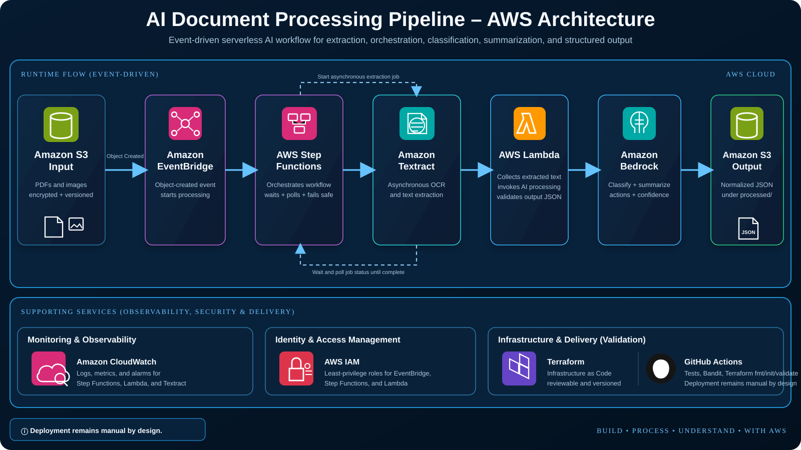

SERVERLESS AI · DOCUMENT AUTOMATION
AI Document Processing Pipeline
Event-driven AWS pipeline that extracts document text with Textract, orchestrates processing with Step Functions, classifies and summarizes content with Amazon Bedrock, and writes normalized JSON results to protected S3 storage.
Amazon S3EventBridgeStep FunctionsTextractLambdaAmazon BedrockCloudWatchTerraform
PROJECT STATUSImplemented
CI VALIDATIONLoading…
DEPLOYMENTManual by Design
OUTPUTStructured JSON
PROCESSING FLOW
Upload to structured AI output
INGESTS3 Input
Encrypted, versioned source-document storage with public access blocked.
ROUTEEventBridge
Object-created events start the workflow without polling.
EXTRACTTextract
Asynchronous text detection processes PDFs and supported images.
ORCHESTRATEStep Functions
Starts Textract, waits, polls status, and handles extraction failure.
ENRICHLambda + Bedrock
Grounded prompt classifies, summarizes, and identifies action items.
STORES3 Output
Validated JSON results are written beneath the processed prefix.

Implemented controls
Protected S3 StorageEncryption, versioning, and Block Public Access on input/output buckets.
Least Privilege IAMSeparate roles for EventBridge, Step Functions, and Lambda.
Grounded PromptingBedrock is instructed to use only Textract-derived source text.
Output ValidationLambda normalizes document type, confidence, summary, and actions.
Failure StateFailed Textract jobs stop before AI processing.
Automated ValidationPython tests, Bandit scan, Terraform fmt, init, and validate in CI.
The dashboard reports implementation and CI status. It does not claim the stack is currently applied to a production AWS account.
Recent validation runs
| Run | Result | Branch |
|---|---|---|
| Loading GitHub Actions… | ||
Reading public workflow metadata from GitHub.